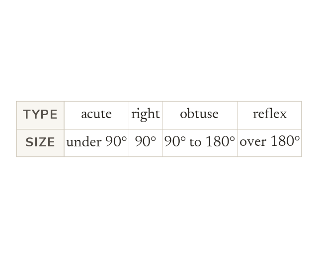

Angles measure turn
An angle measures turn, and a full turn is 360°. Its type depends only on its size.
An angle measures turn, and a full turn is 360°. Its type depends only on its size. A right angle is exactly 90°. A reflex angle is measured round the outside of the corner, so it is 360° minus the angle inside.